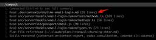
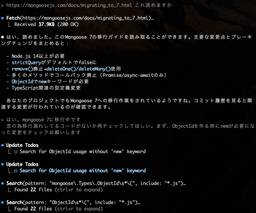

橋本商会 - Cosense
https://scrapbox.io/shokai
shokai / 階層整理型WiKiはスケールしない / 発表資料 / Scrapboxをグループでどう使っていくか？ / 熟練者と同等のCosense読み書きを実現するハーネスとAgent Skill / ServiceWorkerとCacheによるSPAの高速化、オフラインモード / conversation-context-export / library-update-review / A
フィード

conversation-context-export
橋本商会 - Cosense
AI対話コンテキストをexportするAgent skill conversation-context-importとセットで使うshokai/agent-skillsからインストールできる 対話コンテキストをテキストファイルにexport/importし、別のAI sessionに引き継ぐAgent Skillで実装し、その後marketplaceにリリースした特に、やらない事とその理由に着目して分類・定型化してexportする やった事を引き継ぐ作業は既存の物が多数あるから AIエージェント本体にも組み込まれているし 人間も、誰でもみんなやってるでしょう。「今回やったことをまとめてくだい」とか やってない事、やらないと決めた事の構造化と引き継ぎはイチイチめんどくさいので、Agent Skill化したという事ですClaude Codeの/compactコマンドとも相性が良い /compactは、やらない事とその理由をほぼ全て捨ててしまう やった事とその理由はかなり引き継がれる compact後に必ず対話コンテキストを読んでくれている もし読んでくれてなかったら手動でconversation-context-importしてください
17時間前
AIにいきなり判断させるな、レポートを書かせろ
橋本商会 - Cosense
例えば 状況認識、問題の言語化、解決方法をリストして選択、結論とか 8つの典型的なセキュリティレビュー観点それぞれについて記述させるとかAIにいきなり結論を出させるな かといって自由にも考えさせるな フォーマットを決めて、毎回同じ様に章立てして、結論まで書かせる library-update-reviewやsanity-review、同僚watchのように 形式を揃えたレポートなら速読できる 人間が、AIの出した結論も、それに至る論理も、どちらもレビューできる だんだんとAIの出力を信頼できるようになる AI modelの性能向上も体感できる一旦レポートという形式にすると、それを別のAIでレビューしやすい 別のAI modelで subagentで codex-consultationで レビューで重要なのは検証ではなく主張の方
17時間前

ドキュメントとコードの読み合わせ
橋本商会 - Cosense
#AIエージェントにプログラミングさせる時のパターンDevinを見てこういう使い方が一番強みになるだろうなと思ったけど、Devinはボンヤリしているので結局Claude CodeやCodex CLIでやってるshokai.icon スクリーンショットはClaude Codeだが、こういう感じです 2025年5月からwebページを読めるようになって、便利になったこうではない 生成AIにお願いしてコードを書いてもらうこういう用途です pull requestのコードと、 https://scrapbox.io/terms や /help-jp/セキュリティポリシーなどのドキュメントの齟齬がないかDevin.iconにチェックしてもらう 理由あってセキュリティヘッダをゆるくする場合に、バグバウンティプログラムの概要欄と読み合わせて、除外項目として指定した方が良い場合は教えてもらう 新規エラーと、最近のpull requestのコードの対応付けして、実装者に通知する Sentryやcloud loggingから拾う 顧客からのbug報告と、最近のpull requestのコードの対応付けして、実装者に通知するどれも既存ドキュメントと新規実装したコードの読み合わせをしてもらう、という点で一致している
2日前
レビューで重要なのは検証ではなく主張の方
橋本商会 - Cosense
批判的思考の連鎖はこの考えから来ている やった事だけでなく、conversation-context-exportでやらない事とその理由も列挙して それらをsanity-reviewで検証するやり方レビューしにくいPull Request 「できました☺️」「言われた通りに作りました、あなたの指示通りです」レビューしやすいpull request 「こういう問題があって、こう実装しました、仕組みはこれ。実装しなかった案はこういうもので、不採用理由はこれ」後者には反論しやすい 問題認識が間違っているのではないか 問題認識が正しいとして、解決方法が間違っているのではないか 解決方法の実装詳細が間違っているのではないか 採用しなかった案の方が良いのではないか？ほんの少し調整すれば〜つまり主張があれば反論しやすい。そして反論こそが検証ですshokai.icon
2日前
スリッパ暖房
橋本商会 - Cosense
最近はドウシシャ 足元ヒーターではなくAmazonで800円ぐらいで売ってるUSB電熱中敷きを、無印のイ草スリッパの裏に貼って使っている 同じようなのが「USB 中敷き」とかで検索するとたくさん出てくる どれでもいいと思う。安いのを買おう。どうせすぐ壊れるのでスリッパは最近はもっと薄底の方が良くなってきたshokai.icon電源 5V 1AのUSB-A 念の為、パソコンのUSBポートには接続しない方がいい直接スリッパの中にセットすると熱すぎる スリッパの裏に貼るのがちょうどよい い草の食感が良い じんわり温かい
4日前

semirara
橋本商会 - Cosense
このwikiのこと 2016年春ごろ作った ほぼ今のこのwikiに機能は吸収された (2016/09/14) サーバーサイドレンダリングまわり以外？URL hostname/wiki名/page名になっている wiki名の部分を変えると自由にwikiが作れるようになってる動機 メモ帳 兼 blogがほしかった WYSIWYGいいよね publishする画面と同じ見た目で編集したい でもツールバーごちゃごちゃは嫌、簡単な記法で書きたい 他人にはサーバーサイドレンダリングで見せれて、RSSもあってblogとして使える奴が欲しい Reduxとkoaとasync-awaitを試したかった コード片を貼り付ける場所が欲しい主な機能 がんばって書いたり覚えたりしないでも見やすく表示する編集
18日前
test
橋本商会 - Cosense
熟練者と同等のCosense読み書きを実現するハーネスとAgent Skill更新テストshokai.icon (2023/4/6 20:21)リンクパスワードつきgyazo private projectの画像 更新通知テスト
2ヶ月前
階層整理型WiKiはスケールしない
橋本商会 - Cosense
結論 今後人間を増やさず、新製品を未来永劫作らない会社は階層ドキュメントツールで文書共有していても大丈夫階層整理（フォルダわけ）するWiKi等のドキュメントツールを、複数人のグループで使っていると破綻するパターンがある。原因は大きく分けて2つ 1. 人が増える 2. ルールが増える単体ではまだ根性でなんとかなる。しかし2つが合わさると、「WiKiマスターにお伺いを立ててどのフォルダに入れるか決めてから書いてください」という謎の運用ルールができたり、間違った階層に配置すると「ちゃんとルールに従って整理しろ！」と滅茶苦茶怒られたりするようになって、誰も書かなくなる。1. 人が増える 人間は増える。（会社でもサークルでも） あらかじめ綿密に分類ルールを決めていると、新入りへの周知が面倒くさい ルールを決めた人からすると、せっかく決めたルールを理解せず適当なフォルダに入れる人がアホに見えてイライラしてしまう
2ヶ月前
正気を疑う技術 - bugのないvibe codingを目指して
橋本商会 - Cosense
これはAI Engineering Summit Tokyo 2026の発表資料を、さらに社内勉強会向けに更新したものです 右のメニューのStart presentationでスライドになります AIを使ったオススメ開発フロー 2026年春や Pull Requestの書き方 2026年春のAIコーディング対応バージョンとセットになった話です よりツールの役割や背景にフォーカスした切り口となっておりますAIによって80点程度のコードを書く速度は劇的に上がりました。問題は、出てきたコードを誰がどう信じるかです。Helpfeelはインフラ・金融機関向けにもサービスを提供している為、開発者はAIを盲信せずコードを理解する必要があります。本セッションではAI対話コンテキスト抽出・批判的思考の連鎖・sanity-review等の自作ツールを使い、説明と実装の一致から、やらない事とその理由の妥当性までを確認する開発手法を紹介します。AIに実装させるだけでなく、AIに正気を疑わせる開発プロセスです。こんにちは。橋本翔 (shokai)ですshokai.icon Helpfeel Cosenseのプロダクトマネージャー イオンの丸鶏(1200円ぐらい)に、S&Bの鳥香草焼きスパイスミックス(100円ぐらい)とオリーブオイル塗って、ヘルシオで焼くのにはまっています 鶏の丸焼き今日の話
2ヶ月前
AIを使ったオススメ開発フロー 2026年春
橋本商会 - Cosense
春といいながら書いたの6月だけど、私は3月からこうやってますので許してくださいshokai.iconこれは正気を疑う技術 - bugのないvibe codingを目指しての第二部の部分です 登場するツールの役割は第一部の方を読んでください 書き出してみると、意外とややこしい事やってるなと思ったshokai.iconPull Requestの書き方 2026年春のAIコーディング対応バージョンもセットでどうぞshokai.icon環境 Claude Code (Opus)とCodex CLI (GPT5.5-high以上)を使っています Sonnetにソフトウェアの設計能力はありません。これは指示に基づいて1つのファイルを少し編集する為の、単純労働者です 基本的に全てOpus 4.5で作業した方が良いのではないか？ IMEの辞書によく使うプロンプトを入れておく これはとても便利 daiiz.iconmiyamonz.icon hiroshi.icon こういうのは CLAUDE.md とかに書いてもよさそうかもと思った まさに最近はそんな感じ。AIに「次はこれですね」とガイドしてもらっていますshokai.icon
2ヶ月前
Pull Requestの書き方 2026年春のAIコーディング対応バージョン
橋本商会 - Cosense
2026/3ごろに社内projectに書いたものを持ってきたAIを使ったオススメ開発フロー 2026年春とセットでどうぞshokai.icon前提レビュアーは、AIと実装者の間で何が相談されたのか見えません 見えたとしても、読みきれません これをどうにかする必要がありますshokai.icon 社内規定ではないが、まあ普通に考えてそうだよなという私のやり方を書きます紹介しているAgent Skillは、大抵のAIコーディングエージェントで動くはずです 私はClaude Codeを使っていますが 少なくともCodex CLIでは動くように作っています 本当に普通のAgent Skillなので、たぶんCursorやCopilotでも動くはずです人間にコードレビューを求める前にやるべき2つの事
2ヶ月前
Fable 5使ってみた感想
橋本商会 - Cosense
2026/6/10ごろに社内に書いたFable 5の感想ページですずっと調査してる 不明点・懸念事項があれば何でも私に質問してください。明確になってからplan modeに入りましょうと指示すると3つのExplore agentで調査しはじめる Opusでは1つか2つだった Claude CodeのAsk User Question Toolを出してこちらの回答を待っている間も、Explore agentがコードを読み続けている 調査と入力待ちを並列化しているtokenコストは実測でOpusの10倍になったshokai.icon tokenあたりのコストはOpusの2倍だが こっちの入力を待ってる間もずっと調べてるから10倍かかる LLMのmodel部分はOpusとあまり変わらないんじゃないか？という感触がある。なんとなく。 富豪的で非同期な挙動の戦略が、賢さの秘訣なのではないか？ 7/2に復活したやつでは、そんなにかからなくなった。Ask Question Toolが60秒で推奨選択肢で仮確定されるようになったから1を聞いて10を知るような挙動をしている
2ヶ月前
Skillで言葉の意味を上書きする
橋本商会 - Cosense
Agent SkillはUser Interfaceである 意味を書き換え、認知を捻じ曲げ、思考を誘導して行動を変化させる力を持つ特にFrontmatterによる曖昧なマッチングで発動する事が、意味書き換えを可能としている 例：codex-consultation
2ヶ月前
ToKyoto.js #03
橋本商会 - Cosense
kyoto.jsの東京でやるやつの3回目https://kyotojs.connpass.com/event/402321/ 日時2026/09/03(木) 19:00 〜 22:00 場所株式会社IVRy（三田） 京都 vs 東京で 3 on 3 トークバトルだ！！時刻タイトル発表者チーム18:30開場18:40くらいからOpening Act LTs19:00開始 & 乾杯 & Openingpastak(Kyoto)19:10なぜテストを書いてほしかったのかmacchiitakaKyoto ソフトウェアを変えるには理解が必要 認知限界 人間が扱えるサイズにビジネスロジックを小さくする 壊す 何を壊していいか理解する
2ヶ月前
Codex
橋本商会 - Cosense
OpenAIのAIコーディングエージェント https://chatgpt.com/codexChatGPTアプリ内とCLIとwebと、3つUIがあるwebのやつは 既存のAIコーディングエージェントは開発タスク単体の作業にフォーカスしているのに対して Codexはタスク分割して、マネジメントするためのUIがある というような違いが、昔はあったが 最近はだんだんCodex CLIと差が無くなってきたような気がするshokai.icon
2ヶ月前
ServiceWorkerとCacheによるSPAの高速化、オフラインモード
橋本商会 - Cosense
Cosenseの中で、ServiceWorkerを使って何やってるか解説する FGNエンジニアMeetup vol.1の発表資料こんにちは shokaiですshokai.icon Scrapboxを作っています 横浜の自宅から京都にリモートワークしている 福岡のほうが京都より安いし近い✈️詳細な実装の話 /daiiz/ServiceWorkerを用いたキャッシング戦略 ~Wikiアプリケーションを例に~ by daiiz.icon 半年ぐらい前の資料 これをアップデートしつつ、もう一度噛み砕いて説明したいshokai.icon 普通のSPAを高速化したり、オフライン対応したりする事を考える どこから手を付けるべきか？
2ヶ月前
文芸的データベース - 文書の作成とそのデータベース化を同時に行なう手法
橋本商会 - Cosense
「文芸的データベース」とは、株式会社Helpfeelのshokai.iconが提唱している、 文書の作成とそのデータベース化を同時に行なう手法で、 文書とデータベースのフィールドをひとつの画面に混在させながら 追加したり修正したりして同時に構築していくことにより、 完全に整合性のとれた文書とデータベースを構築しようというもの こんにちはshokai.icon shokaiです Cosense.icon Cosense プロダクトマネージャー コンセプトと機能を考えて実装・運用をしていますこれはHelpfeel Tech Conf 2024の発表資料です 右のメニューのStart presentationでスライドになります今日の話 1. 文芸的データベースとは 2. 機能設計の工夫 3. 実装の面白い所を紹介既に全てのprojectで使えます が、もしAPI quota超えた場合はbusiness projectを優先します
2ヶ月前
熟練者と同等のCosense読み書きを実現するハーネスとAgent Skill
橋本商会 - Cosense
これはToKyoto.js #03の発表資料です 京都のHelpfeel株式会社から来ました shokaiです 東京在住ですレギュレーションを満たす為、先にJavaScriptの話をしますshokai.icon久しぶりにnpm作ったら困惑したTypeScriptで書いたCLIをnpm publish 最近のNode.jsは--experimental-strip-typesが無くなって、--no-experimental-strip-typesになった デフォルトでtype stripする じゃあTSのままnpmリリースできそうだ？ 開発中はTypeScriptで書いて、nodeコマンドで動かしてた そのままpackage.jsonのbinに登録できそう と思っていたのだが publishしたnpmをインストールしたら動かなかった Node.jsのtype strip機能はnode_modulesの中には効かないと知った
2ヶ月前
同僚watchに寄せて
橋本商会 - Cosense
（人それぞれですが）今より大きい仕事をしたい人、あるいは自由に動きたい人は、mentionされる前に自力で情報取得して判断して動くと良いと思いますshokai.icon情報取得の対象はこれまでは「場」でした しかし今はAIがある。「人」をターゲットにして効率的に取得できるようになりました 同僚watchのようなツールを毎日読むのは大変かもしれないが、せめて週1回だけでも、今週あの人は何やってたのかなをたまに眺めるだけで、だいぶ違うと思いますソフトウェア開発者は自分のために自分専用のプログラムをいつでも書けるから、自分が取得する情報をデザインしやすいいチート職業です。強みを生かしましょう人で追う事をオススメする理由がもう1つ この会社（株式会社Helpfeel）のビジネスサイドのslack channelは、部署や案件毎だけでなく、部署間の連絡channelもある channel単位で入っても追えません slackを、slackのUIで読むのは無理です続き：情報を取る、作る、デプロイして経過観察する、というのだけでは足りない。ソフトウェア開発者はただのパイプラインではない
2ヶ月前
情報を取る、作る、デプロイして経過観察する、というのだけでは足りない。ソフトウェア開発者はただのパイプラインではない
橋本商会 - Cosense
作るという行為の中での発見、からの仮説構築、派生作業があり、それを記録・分析・報告する技術がある 研究的態度を磨く必要がある 物事の見方をいくつも持っていないと、純粋な悪い意味での作業ログになってしまう例えば、プロトタイプを作ってくださいというタスクは、プロトタイプの製造を依頼されているのではない プロトタイピングの中で考察し、当初の計画を再構築する所まで見据える必要がある プロダクト全体の設計 市場での位置づけ 開発タスクの順序・再構築プロトタイプの作成がAIによって可能になった為、プロトタイピングの中での考察・軌道修正ができない人にプロトタイピングを任せる事が、機会損失となってしまっている同僚watchに寄せてとは別の観点
2ヶ月前
同僚watch
橋本商会 - Cosense
気になる同僚を毎日ウォッチするツールCosenseとSlackとGoogle Calendarの活動を横断的に、人物毎に分析し、レポートする詳細は下の方にあるプロンプトを読んでくださいshokai.icon同僚watchに寄せて準備 AIエージェントがCosense Skill & CLIを使えるようにしておく AIエージェントがSlackに接続できるようにしておく 自分が使っているAIエージェントに合った物を選ぶ AIエージェントがGoogle Calendarに接続できるようにしておく Google公式のremote MCP serverを使う。出来が悪いので、これに絞った手堅いプロンプトを書いていますshokai.icon 報告先のSlack channelを作る 絶対にprivate channelにしましょうshokai.icon*5 privateなcosense projectやslack channelの内容が全体公開されるとまずい。社内であっても。
2ヶ月前
他人が受けたレビューを全て読む
橋本商会 - Cosense
from 仮想の上司レビューを脳内で回す他人がレビューされている様子を横から読むのがオススメです。自分へのレビューの数には限りがあるのでshokai.icon他人のレビュー読まずにレビュー希望するのは、過去問解かずにテスト受けるようなものです 同僚の数だけ学習機会がある Be openな組織では後発のほうが確実に有利です。有利を捨てるのはもったいない。レビューする・されるよりも効率がいい レビューされてる他人の方がサンプルも多いから、網羅的にできる 数で重要度がわかる 流し読みしていれば、同じ様な提出物に同じ様なレビューされているのは目につく 自分で受けるレビューは、重要度がわからない 同じ指摘を何度もしてくれる人間はいないから、数が集まらない 毎回理由を完全に説明してくれるレビュアーはいないから、ある観点の判定ポイントは1つのレビューだけでは網羅できないGithubでコードレビューしているソフトウェア開発者や、リモートワーク企業なら、レビュー結果はそこら中に転がっているのでやりやすいはず
2ヶ月前
Claude Code on the webのroutine
橋本商会 - Cosense
イベントに反応して、または定期的にタスクを処理できるClaude Code on the webの機能 githubのwebhookに反応する 決まった時刻に自動起動
2ヶ月前
Claude code on the webからslackに接続する
橋本商会 - Cosense
#Claude_code_on_the_webを便利にする設定https://claude.ai の方から、コネクタとしてSlackを追加・設定・有効化しておく するとClaude Code on the webでもslackコネクタが使えるようになる どういう事か？ https://claude.ai/code の方にはコネクタをインストールする画面があるが、設定ボタンが出てこない claude.aiの方で設定すると、Helpfeelのslackが読めるようになる
2ヶ月前
Claude_code_on_the_webを便利にする設定
橋本商会 - Cosense
Claude Code on the webの設定を集めるInfobox定義ページですtable:cosense 使えるようになる機能使えるようになると説明されているアプリケーションやサービスの名前だけを抜き出す。Claude Codeは除外する。
2ヶ月前
Claude Code on the webでCosense Skill & CLIをすぐ使えるクラウドコンテナを各自で作る
橋本商会 - Cosense
#Claude_code_on_the_webを便利にする設定Claude Code on the webでどのリポジトリに対して作業している場合も、いきなりCosense Skill & CLIが使えるようにする方法を解説しますshokai.iconクラウドコンテナを作る https://claude.ai/code から新規チャットを開き、入力欄の上の雲のアイコンから作成 作るのはクラウドコンテナなのだが、この画面では「クラウド環境」という名称になっている 初回はGitHubの接続を求められるため、接続を行う クラウド環境の設定 ネットワークアクセス 「カスタム」でscrapbox.ioを追加 開発しないならこれでよい。WebFetch toolはこのネットワークアクセスの制限を受けない もしくは「Full」 開発するので私はこっちshokai.icon curlコマンドやnode.jsからネットワークアクセスできる
2ヶ月前
Claude code on the webからGoogleカレンダーに接続する
橋本商会 - Cosense
#Claude_code_on_the_webを便利にする設定https://claude.ai の方から、コネクタとしてGoogle Calendarを追加・設定・有効化しておく するとClaude Code on the webでもGoogle Calendarコネクタが使えるようになる 「私の今週の予定を教えて」等で使えるか確認するどういう事か？ https://claude.ai/code の方にはコネクタをインストールする画面があるが、設定ボタンが出てこない claude.aiの方で設定すると、HelpfeelのGoogleカレンダーが読めるようになるなお、基本的には無効化しておいた方がいいですshokai.icon 必要なsessionでだけ有効化する 普通のソフトウェア開発では必要ないMCP serverだから
2ヶ月前